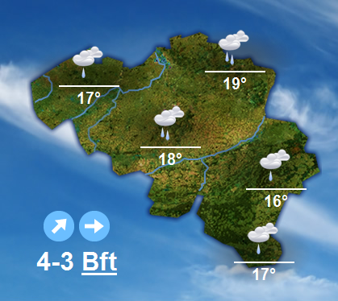

Het weer vandaag
Vanmiddag blijft het overwegend zwaarbewolkt met regelmatig lichte tot matige regen over het midden van het land en af en toe wat lichte regen in het uiterste noordwesten en zuidoosten. We blijven in de zachte lucht met maxima van 14 graden op de Hoge Venen tot 18 of 19 graden in het centrum van het land. De wind neemt in kracht af en wordt vanaf het noorden meestal matig uit zuidwest tot west. In het zuiden van het land waait die nog tijdelijk vrij krachtig uit het zuidwesten met rukwinden tot 70 km/h
Vannacht blijft het overwegend zwaarbewolkt met de meeste regen over het noorden van het land. Opnieuw is het in het uiterste zuiden en later ook over het midden droger met tijdelijk zelfs enkele opklaringen. Het blijft zacht met minima tussen 10 en 14 graden. De wind waait in het noordelijk deel van het land aanvankelijk zwak uit veranderlijke richtingen maar trekt later zoals in het zuiden opnieuw aan tot matig of vrij krachtig uit zuid tot zuidwest. Op het einde van de nacht draait de wind aan zee in het noordwesten bruusk naar het noorden en wordt vrij krachtig tot krachtig.
Algemene luchtgesteldheid
Regengebieden, verbonden aan een lagedrukkern, die zich snel richting Denemarken en later naar het westen van Rusland verplaatst, blijven nog tot morgennamiddag over het land slepen. Morgen ontwikkelt zich een hogedrukzone ten westen van Ierland en die zal ons weer tijdens de rest van het weekend gunstig beïnvloeden.
Zondag en maandag is het rustig en droog met temperaturen rond 15 of 16 graden.
Waarnemingen
| Plaats | Weer | Temp | Richting | Snelheid | zicht | Druk / trend | |||
|---|---|---|---|---|---|---|---|---|---|
| ZeeBrugge |  |
11.1 | °C | SE | 6 | kmu | 20 | km | 999 hPa, Stijgend |
| Oostende |  |
14.0 | °C | E | 14 | kmu | 30 | km | 998 hPa, Stijgend |
| Ukkel |  |
13.2 | °C | NNE | 7 | kmu | 15 | km | 992 hPa, Stijgend |
| Widuemont | 12.8 | °C | E | 6 | kmu | 35 | km | 1002 hPa, Stijgend | |